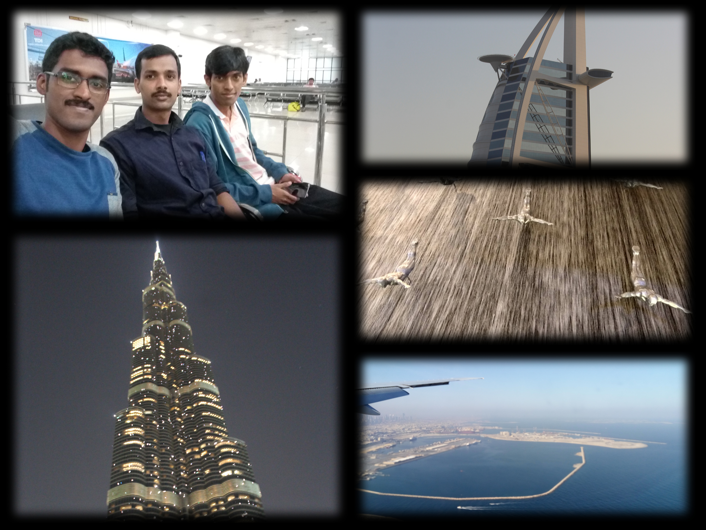
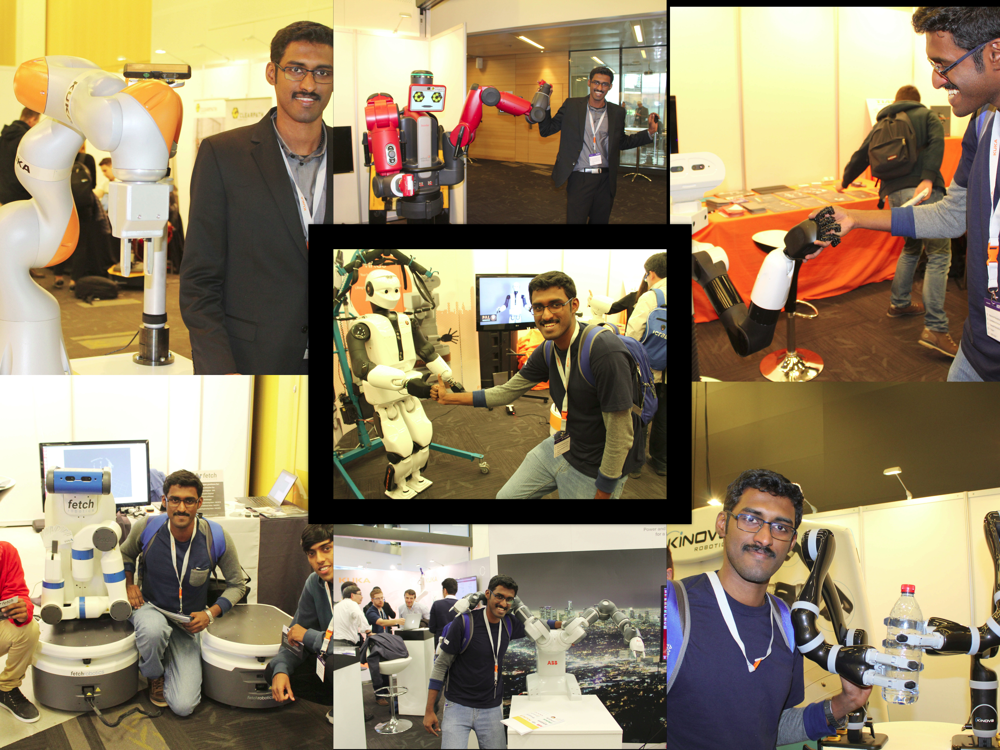
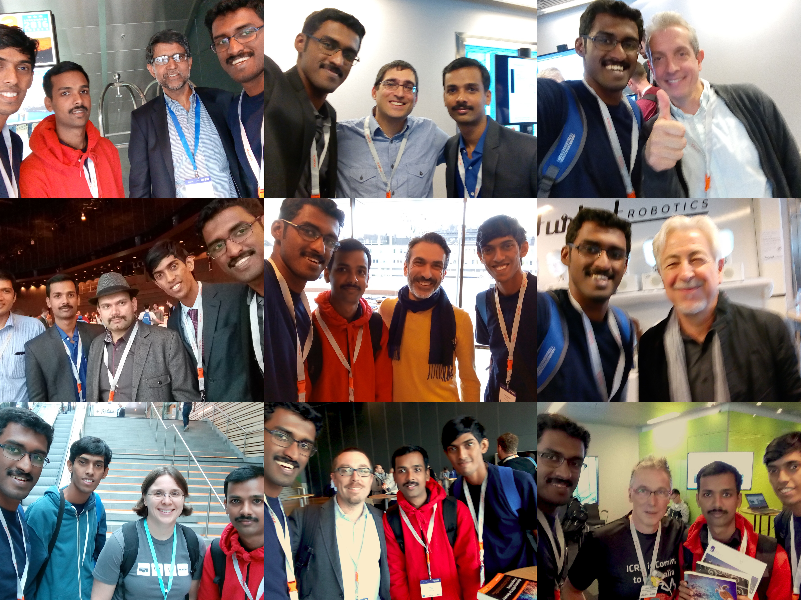
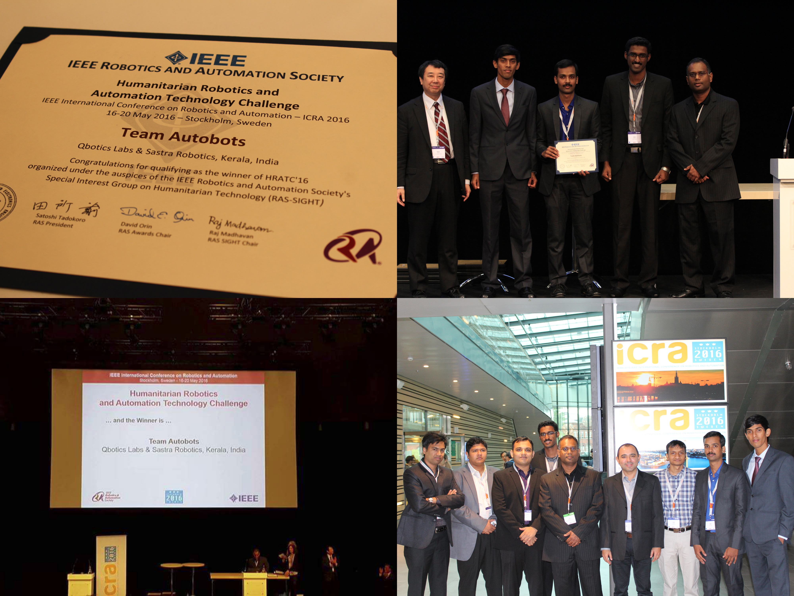
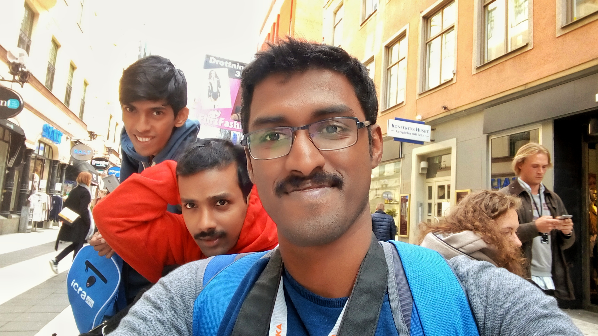

Attending ICRA and winning HRATC Challenge

I heard about the International Conference on Robotics and Automation ( ICRA) for the first time around 2013, mainly from the videos posted by IEEE Spectrum and IEEE Video Friday. Soon, I realized it is the big name robotics conference where academia as well as industry showcase their flashy demos. Since then, for the next couple of years, I would be always looking forward the ICRA time, when there would be a swarm of updates on the most recent research happening in robotics.
A way to attend the conference comes up
I always wished to attend these conferences, but not having an academic/research background as well as expensive registration as a non academic and expenses related to travel and accommodation held me back. I realized that there are robot competitions associated with the conference. The Humanitarian Robotics and Automation Technology Challenge (HRATC) attracted me, primarily because it related to autonomous navigation and SLAM, which was something I was exploring at my startup. Secondarily the fact that the competition used ROS as the platform and no hardware was necessary. This relieved us from the hassle and expenses of building hardware.
So, I teamed with two of my friends, Lentin Joseph & Chandykunju Alex. We named the team Autobots. The challenge involved autonomously searching and mapping an area for buried landmines using a UGV equipped with a metal detector. Teams were rewarded for detecting a landmine, marking it on the map and on the area covered. Penalties were awarded for running over landmines and crashing into obstacles/trees. Initial elimination stages involved teams competing in the Gazebo simulator. In the intermediate stage, teams were provided real data from the hardware as ROSBAG files and the code would be tested on them. The finals were scheduled to be conducted at ICRA 2016, in Stockholm. Teams would be competing on real robot hardware in the finals. To make it more realistic like an inaccessible landmine filled zone, the competition arena including the robot, landmines, obstacles etc were set up in Portugal and we were only given an initial remote access to upload our code from Stockholm. After that the robot has to operate autonomously. We cleared the initial rounds effortlessly and made into the finals. Hurray..!! So here comes my opportunity to attend ICRA. I was so excited.
The excitement was huge- it was my first conference, it was my first international trip, and moreover, the excitement of meeting eminent robotics researchers, attending their talks and seeing the cutting edge research happening worldwide. It was indeed a dream came true.
The travel, an an unexpected visit to Dubai
So, finally, its time to go to Stockholm. We borrowed money from friends and family, registered for the conference, got the visa, booked flight tickets, and decided to stay in an affordable hostel at a walkable distance from the conference venue. Our flight was from Kochi to Stockholm with a layover in Dubai. Unfortunately, the flight from Kochi got delayed and we missed our connection flight from Dubai. The airlines shifted us to an airport hotel and re-booked the next days flight for us. Even though this seemed unfortunate, we got the chance to spend a day in Dubai and do sightseeing. We visited Burj Khalifa, Palm Jumeirah etc.

Arriving in Stockholm
The next day, we arrived in Stockholm. After clearing the immigration procedures, we heard our names being called out through the PA system of the airport. We were requested to report to the airlines desk. Soon, we found out that the airlines forgot to pick our baggage from Dubai. They collected the address of our hostel and promised to deliver it next day( Which they did not until the last day of the conference). So, we are now in a foreign country, with just the dress we are in and the laptop in backpack.
ICRA EXPO
The exhibition stalls at the conference were one thing I was most looking forward to visit. I was excited to see the real robots up so close, the ones that I have seen only in YouTube videos. Moreover I got to have interesting conversations with the people exhibiting them. I met many other startup founders and could even work out some potential future collaborations. In addition, we got enough free T-shirts which came handy due to our delayed baggage.

Meeting my heros
Another aspect was meeting those pioneers in robotics that you have only read about. These included Dr.Wolfram Burgard, Dr.Vijay Kumar from UPenn, Dr.Henrik Christensen, Dr. Oussama Khatib, Dr. Magnus Egerstedt, Dr.Melonee Wise, Dr Peter Corke, Dr. Giorgio Metta etc to name a few. I came to know them either as the professors in the MOOCs classes I took or from cool robot videos/research featured on IEEE Spectrum. Meeting them and talking with them (even though I did not had much to contribute) was a dream come true. They can be said of my role models whom I aspire to be one day. ALl of them were very friendly and approachable and we even took selfies with them. 
Winning the challenge
The HRATC challenge was organized over two days.We had to upload our code to the remote robot and video of the robot in operation was live streamed

Results from the performance on two days were averaged. On the first day, out team scored the lowest. Our navigation stack primarily used GPS coordinates for localization. It was cloudy at the remote robot site and we had trouble getting an accurate GPS fix often. This caused us so much issues in navigation. After the first day, we pulled an all-nighter to re-write the navigation stack so that it doesn’t use GPS always and uses a probabilistic means of localization using the noisy and slippery wheel encoders and the unreliable GPS. We performed much better the next day. But we were not much hopeful of making it to the top position, given our not that great performance on first day. The winners would only be announced on the last day of the conference. So we spend the rest of the time exploring the conference, attending talks, meeting people, etc. 
Exposure to Research
It was my first time seeing paper presentation sessions. There was three auditoriums where sessions were held in parallel. It was quite difficult to choose which session to attend, since many of them were interesting to me and to make things worse, they were scheduled in parallel.I was interested in everything, ranging from research on robot manipulation, flying robots, navigation, walking robots, novel hardware design and actuation, computer vision, and what not. I enjoyed almost all the sessions I attended. It was exciting to see the cutting edge research results. Moreover the basic concepts behind most of the research was simple and easy to understand. Even though I couldn’t make much sense of many highly mathematical and purely theoretical papers, the other papers presented could be grasped easily. Even though I couldn’t make sense of many such papers due to my limited knowledge, it was an awesome learning experience. The papers published at ICRA came from all realms of robotics. Coming from a background more inclined seeing the real-hardware robots, I could classify them into two- purely theoretical/mathematical papers and papers on real robot hardware.
Previously my thought was that the research papers/presentations were only understood by someone with a masters or P.hD, due to the complex and advanced topics they handle. I believe keeping myself updated by not missing any IEEE spectrum video Fridays, reading voraciously every IEEE Robotics & Automation Magazine for the last couple of years helped me a lot in understanding them.
I addition to getting a broad overview of all the research happening in robotics, I had a firsthand experience of how the academic research and publishing works. The sessions gave me a realization that many of the things that I did as hobby projects could be the basis for writing awesome research papers. It built in me a confidence that, I too can write and publish a research paper.
The interactive sessions after the paper presentations were much useful than the presentations as such as such. I could meet the authors and ask them more about their paper
Exploring Stockholm
Since this is the first international trip for the three of us, we had decided to make the best use of it. We stayed for a couple more days after the conference to explore Stockholm. Since it was May, the weather outside was awesome. The city was clean, safe and filled with greenery. We explored the city mostly on foot.
